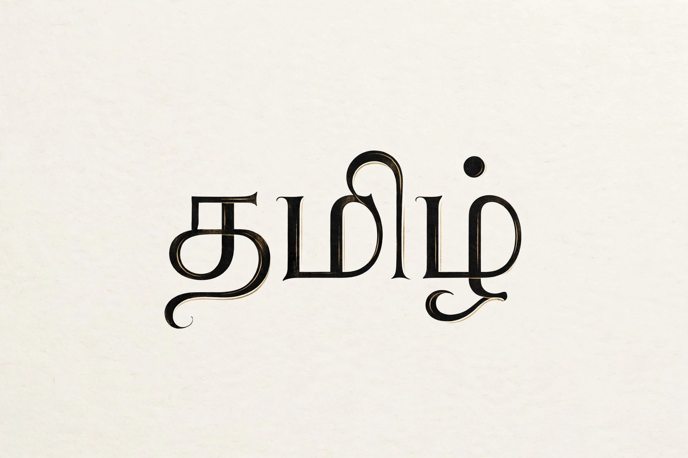

| Tamil | |
 "Tamil" in the Tamil script | |
| Native to | India (Tamil Nadu, Puducherry), Sri Lanka, Singapore, Malaysia |
|---|---|
| Speakers | approx. 75 million native; 85+ million total |
| Family | Dravidian → Southern → Tamil–Kannada → Tamil |
| Official status | India, Sri Lanka, Singapore |
| Recognition | Classical language of India (first so declared, 2004) |
Tamil is a Dravidian language natively spoken by the Tamil people of South Asia. It is an official language of the Indian state of Tamil Nadu, the union territory of Puducherry, Sri Lanka, and Singapore, and is spoken by large communities in Malaysia, South Africa, and the global Tamil diaspora. Tamil has the longest continuously documented literary tradition of any Dravidian language, with texts going back more than two thousand years, and was the first language recognised as a classical language by the Government of India.
Old Tamil is attested in inscriptions and in the Sangam literature, a corpus of poetry from the first centuries BCE and CE. Middle Tamil (c. 8th–14th centuries) saw major devotional and epic works, and Modern Tamil developed under influences including Sanskrit, Persian, and European languages. Throughout its history Tamil maintained strong linguistic purism movements that coined native terms for modern concepts.
Tamil is an agglutinative language with subject–object–verb word order, a rich system of suffixes, and rational/irrational gender classes. It is notably diglossic: a formal literary variety (centamiḻ) is used in writing and public speaking, while regional spoken varieties (koṭuntamiḻ) are used in daily life. The Tamil script is an abugida of 12 vowels and 18 consonants, written left to right without case distinctions.
Classical works include the Tolkāppiyam grammar, the ethical Tirukkural attributed to Thiruvalluvar, and the epics Silappatikaram and Manimekalai. Tamil cinema, based in Chennai ("Kollywood"), is one of India's largest film industries. Tamil is also among the most widely used Indian languages on the internet, and Tamil literature's antiquity is a central element of Tamil identity.